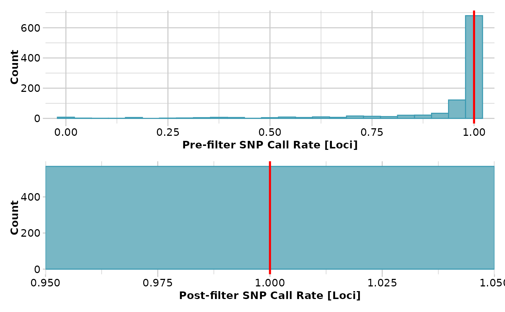

Calculates pairwise linkage disequilibrium by population
Source:R/gl.report.ld.map.r
gl.report.ld.map.RdThis function calculates pairwise linkage disequilibrium (LD) by population
using the function ld (package snpStats).
If SNPs are not mapped to a reference genome, the parameter
ld_max_pairwise
should be set as NULL (the default). In this case, the
function will assign the same chromosome ("1") to all the SNPs in the dataset
and assign a sequence from 1 to n loci as the position of each SNP. The
function will then calculate LD for all possible SNP pair combinations.
If SNPs are mapped to a reference genome, the parameter
ld_max_pairwise
should be filled out (i.e. not NULL). In this case, the
information for SNP's position should be stored in the genlight accessor
"@position" and the SNP's chromosome name in the accessor "@chromosome"
(see examples). The function will then calculate LD within each chromosome
and for all possible SNP pair combinations within a distance of
ld_max_pairwise.
Usage
gl.report.ld.map(
x,
ld_max_pairwise = NULL,
maf = 0.05,
ld_stat = "R.squared",
ind.limit = 10,
stat_keep = "AvgPIC",
ld_threshold_pops = 0.2,
plot.out = TRUE,
plot_theme = NULL,
histogram_colors = NULL,
boxplot_colors = NULL,
bins = 50,
save2tmp = FALSE,
verbose = NULL
)Arguments
- x
Name of the genlight object containing the SNP data [required].
- ld_max_pairwise
Maximum distance in number of base pairs at which LD should be calculated [default NULL].
- maf
Minor allele frequency (by population) threshold to filter out loci. If a value > 1 is provided it will be interpreted as MAC (i.e. the minimum number of times an allele needs to be observed) [default 0.05].
- ld_stat
The LD measure to be calculated: "LLR", "OR", "Q", "Covar", "D.prime", "R.squared", and "R". See
ld(package snpStats) for details [default "R.squared"].- ind.limit
Minimum number of individuals that a population should contain to take it in account to report loci in LD [default 10].
- stat_keep
Name of the column from the slot
loc.metricsto be used to choose SNP to be kept [default "AvgPIC"].- ld_threshold_pops
LD threshold to report in the plot of "Number of populations in which the same SNP pair are in LD" [default 0.2].
- plot.out
Specify if plot is to be produced [default TRUE].
- plot_theme
User specified theme [default NULL].
- histogram_colors
Vector with two color names for the borders and fill [default NULL].
- boxplot_colors
A color palette for box plots by population or a list with as many colors as there are populations in the dataset [default NULL].
- bins
Number of bins to display in histograms [default 50].
- save2tmp
If TRUE, saves any ggplots and listings to the session temporary directory (tempdir) [default FALSE].
- verbose
Verbosity: 0, silent or fatal errors; 1, begin and end; 2, progress log; 3, progress and results summary; 5, full report [default 2, unless specified using gl.set.verbosity].
Details
This function reports LD between SNP pairs by population.
The function gl.filter.ld filters out the SNPs in LD using as
input the results of gl.report.ld.map. The actual number of
SNPs to be filtered out depends on the parameters set in the function
gl.filter.ld.
Boxplots of LD by population and a histogram showing LD frequency are presented.
See also
Other report functions:
gl.report.bases(),
gl.report.callrate(),
gl.report.diversity(),
gl.report.hamming(),
gl.report.heterozygosity(),
gl.report.hwe(),
gl.report.locmetric(),
gl.report.maf(),
gl.report.monomorphs(),
gl.report.overshoot(),
gl.report.pa(),
gl.report.parent.offspring(),
gl.report.rdepth(),
gl.report.reproducibility(),
gl.report.secondaries(),
gl.report.sexlinked(),
gl.report.taglength()
Author
Custodian: Luis Mijangos – Post to https://groups.google.com/d/forum/dartr
Examples
require("dartR.data")
x <- platypus.gl
x <- gl.filter.callrate(x,threshold = 1)
#> Starting gl.filter.callrate
#> Processing genlight object with SNP data
#> Warning: data include loci that are scored NA across all individuals.
#> Consider filtering using gl <- gl.filter.allna(gl)
#> Warning: Data may include monomorphic loci in call rate
#> calculations for filtering
#> Recalculating Call Rate
#> Removing loci based on Call Rate, threshold = 1
#>

#> Completed: gl.filter.callrate
#>
x <- gl.filter.monomorphs(x)
#> Starting gl.filter.monomorphs
#> Processing genlight object with SNP data
#> Identifying monomorphic loci
#> Removing monomorphic loci and loci with all missing
#> data
#> Completed: gl.filter.monomorphs
#>
x$position <- x$other$loc.metrics$ChromPos_Platypus_Chrom_NCBIv1
x$chromosome <- as.factor(x$other$loc.metrics$Chrom_Platypus_Chrom_NCBIv1)
ld_res <- gl.report.ld.map(x,ld_max_pairwise = 10000000)
#> Starting gl.report.ld.map
#> Processing genlight object with SNP data
#> Calculating pairwise LD in population SEVERN_ABOVE
#> Calculating pairwise LD in population SEVERN_BELOW
#> Calculating pairwise LD in population TENTERFIELD
#>
 #> Completed: gl.report.ld.map
#>
#> Completed: gl.report.ld.map
#>